Galería de Bárbara Gaito
Nombre y apellido: Bárbara Gaito
Galería de fotos de meriendas y brunch que recomiendo en la Ciudad de Buenos Aires. La propuesta incluye cafés, tostados, pastelería y mesas completas para compartir.
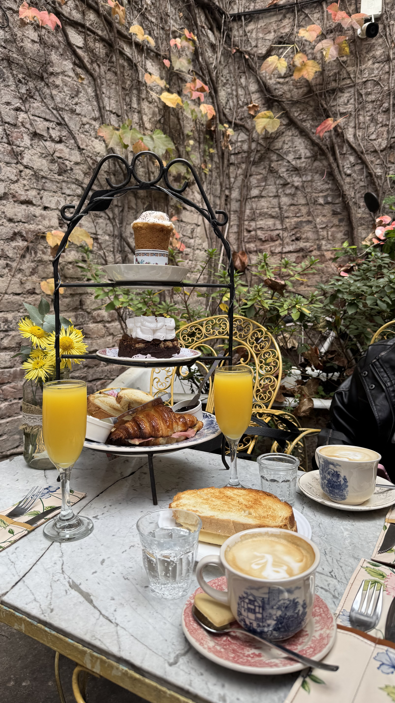
Meriendas
-

Junin Cafe de Especialidad
Jugo exprimido de naranja, limonada de frutos rojos, cuadrado de coco y cheesecake de oreo
Ubicación: Junín 1001
-

Casa LHarmonie
Jugo de naranja, matcha con colchón de frutillas, brownie y roll de canela con pistacho
Ubicación: Maure 1516
-
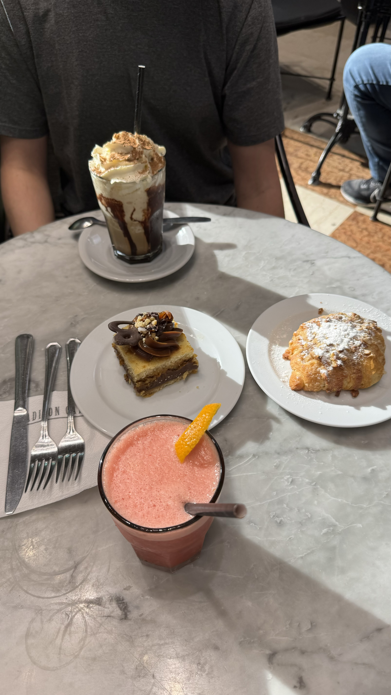
Madison Café
Licuado de frutilla y naranja, frappé de chocolate, cuadrado de coco y croissant con almendras
Ubicación:Av. Córdoba 550. Galerías Pacífico en el subsuelo
-
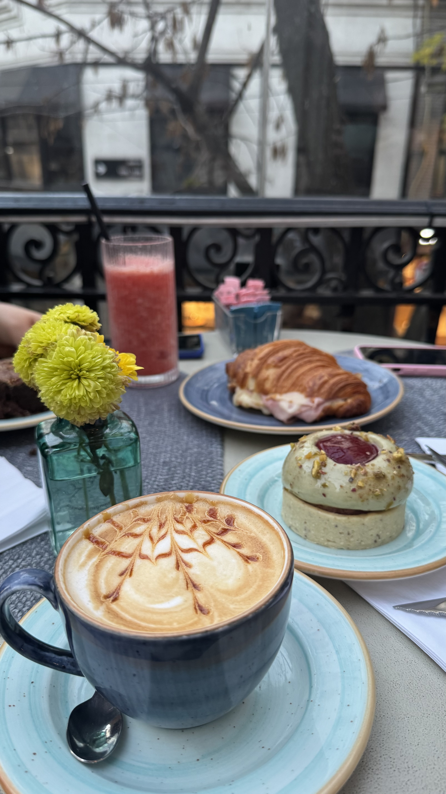
Amayta
Café con leche, licuado de frutilla, mini cake de pistacho y frambuesa con una medialuna de jamón y queso
Ubicación: Juncal 1207
-
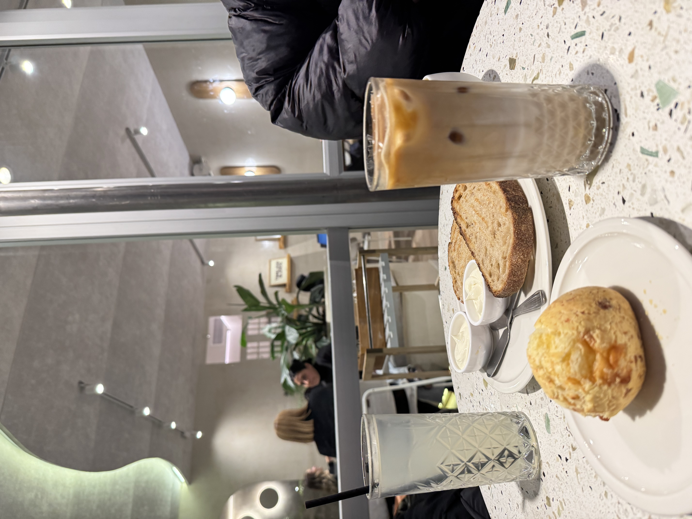
Kopi Cafe
Iced coffe, limonada, tostadas con queso crema y chipá
Ubicación: Aguero 1468
-
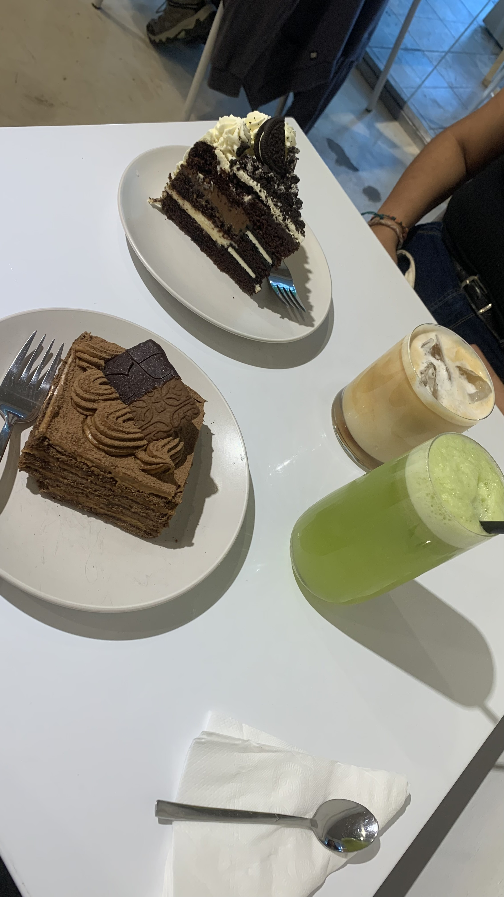
Magari Caffè
Iced coffe, limonada con menta y jengibre, chocotorta y torta oreo
Ubicación: Defensa 1661
-
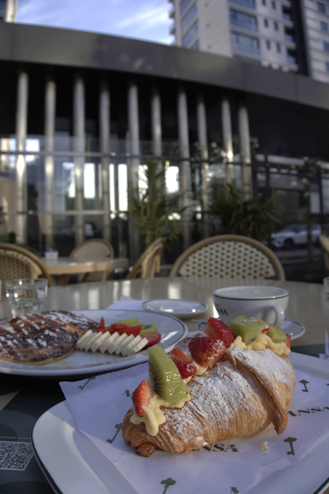
Casa Mansa
Café con leche, pancakes con frutas y un croissant con frutas de estación
Ubicación: Juana Manso 1965
-
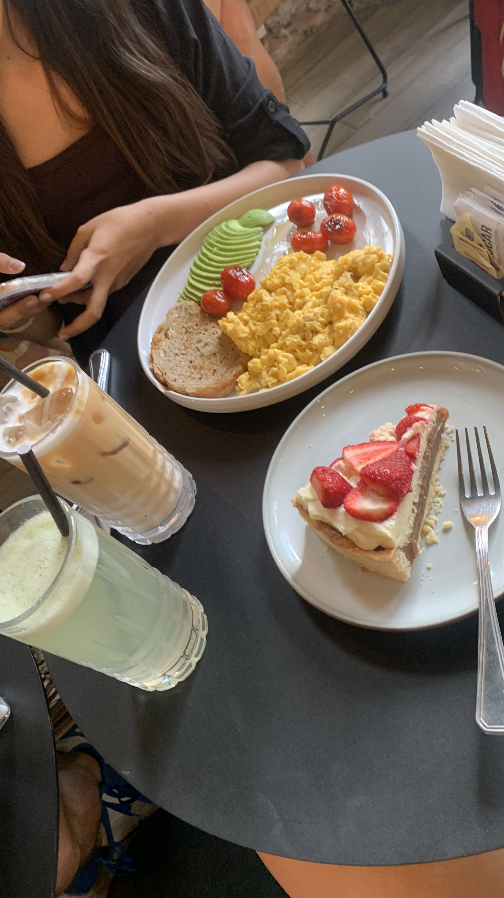
ISPICA Café de Especialidad
Iced coffe, limonada de menta y jengibre, avocado toast y torta de crema, dulce de leche y frutillas
Ubicación: Gorriti 5295
Brunchs
-
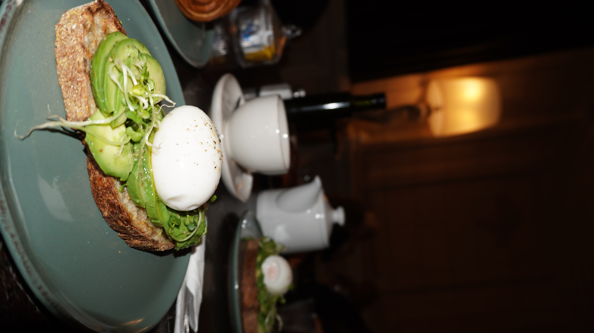
Palacio Basavilbaso
Té acompañado de avocado toast
Ubicación: José Andrés Pacheco de Melo 1900
-

La Farola Express
Jugo de naranja exprimido, té en hebras y bowl de frutas
Ubicación: Av. Dr. Ricardo Balbín 3991
-

Enitma Café Reserva Gourmet
Té en hebras, tostado de jamón y queso, tostadas con mermelada y queso crema, además, un bowl de frutas
Ubicación: Av. Belgrano 502
-

Kopi Café
Iced matcha latte, limonada, café con leche, roll de canela de pistacho y croissant
Ubicación: Beruti 3897
-
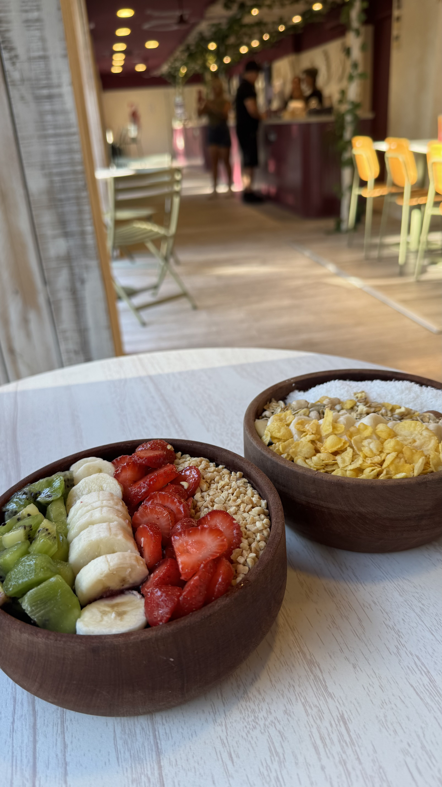
Acai Brasil
Bowls de frutas con acai
Ubicación: Av. Alicia Moreau de Justo 864
-
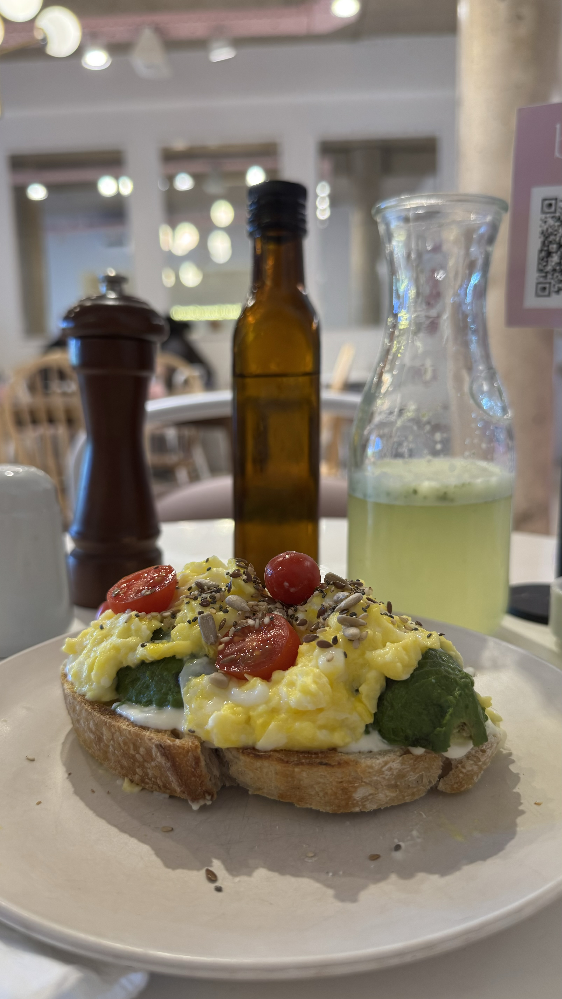
Magari Caffè
Avocado toast y limonada con menta y jengibre
Ubicación: Defensa 1661
-
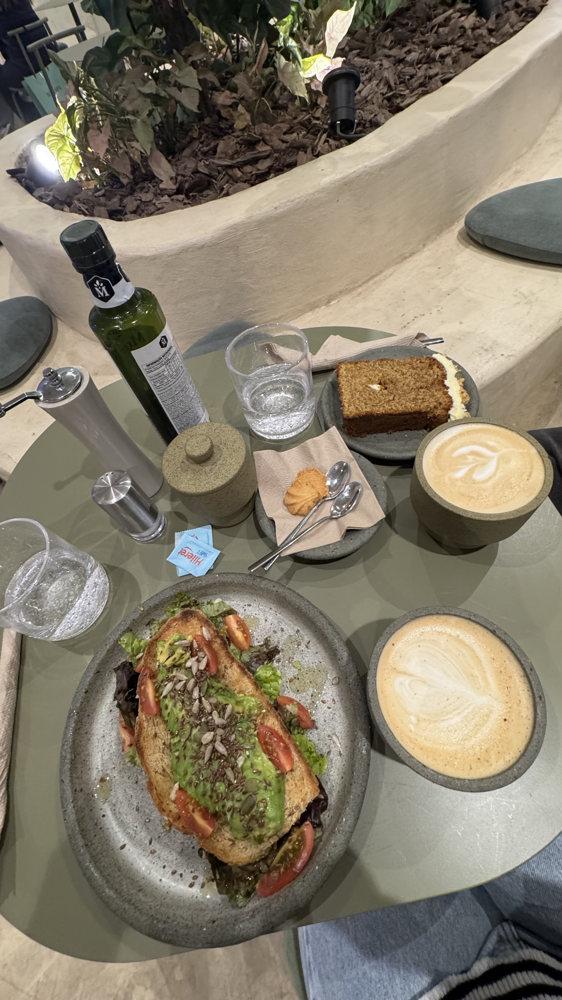
Petricor Café Bistró
Dos Lattes, avocado toast y un budín de carrot cake
Ubicación: San Martín 704
-
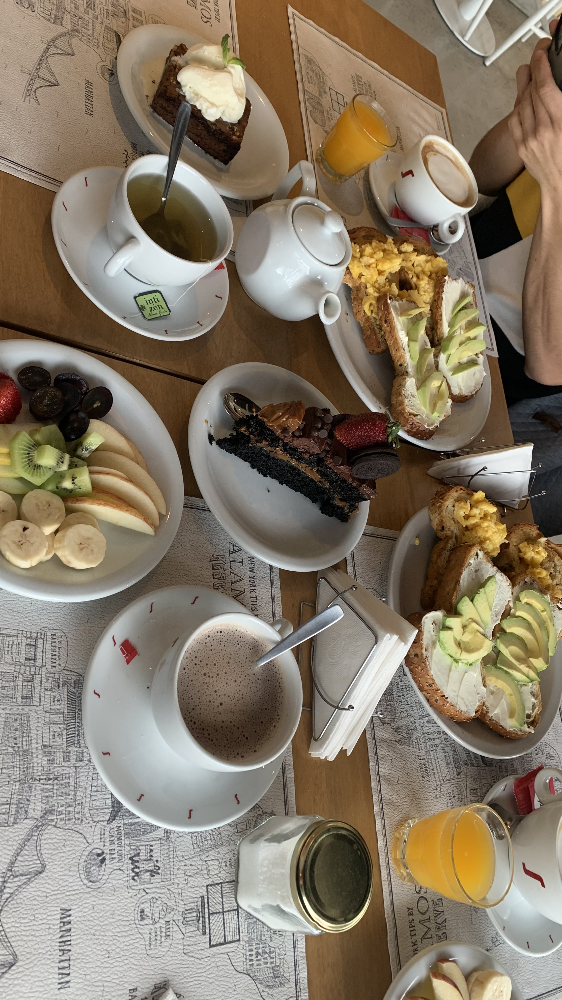
Brote Madero
Café con leche, té, avocado toast, torta Matilda y bowl de frutas
Ubicación: Rosario V. Penaloza 460
-
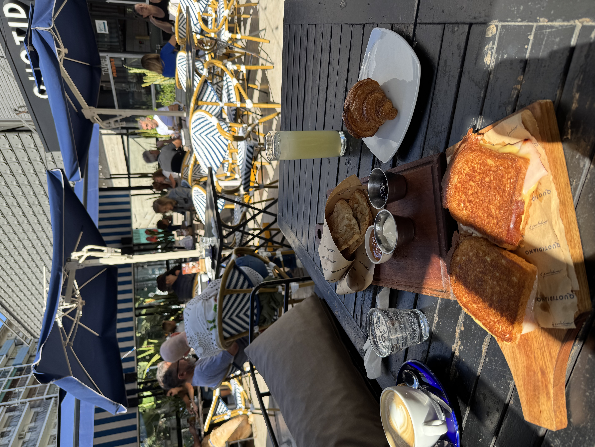
Quotidiano
Café con leche, limonada, croissant y tostadas en pan de campo con mermelada y queso crema
Ubicación: Arenales 3360
-
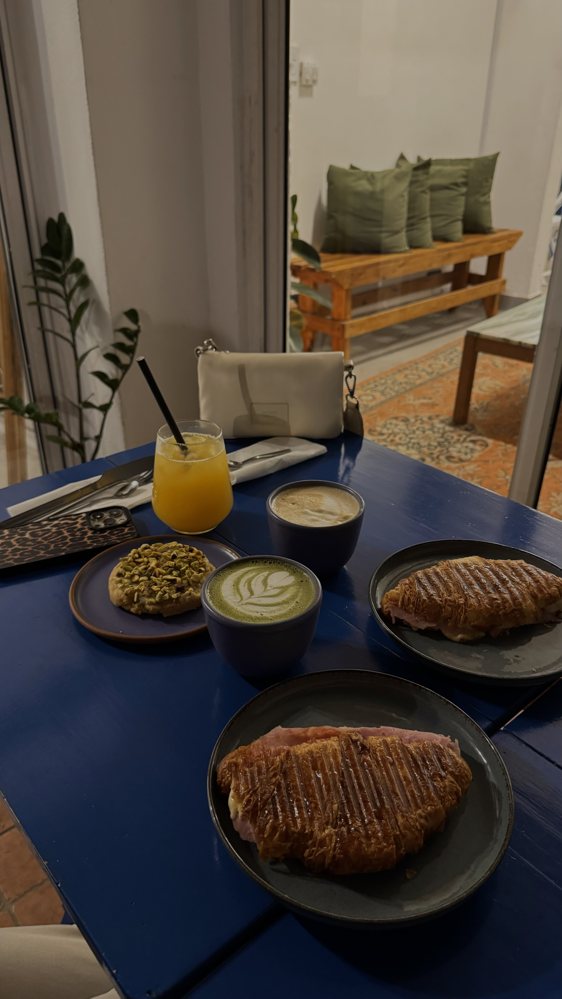
Hi Coffee
Café con leche, matcha latte, jugo de naranja, croissant con jamón y queso tostado y cookie de pistacho y chocolate blanco
Ubicación: Guemes 4125
-
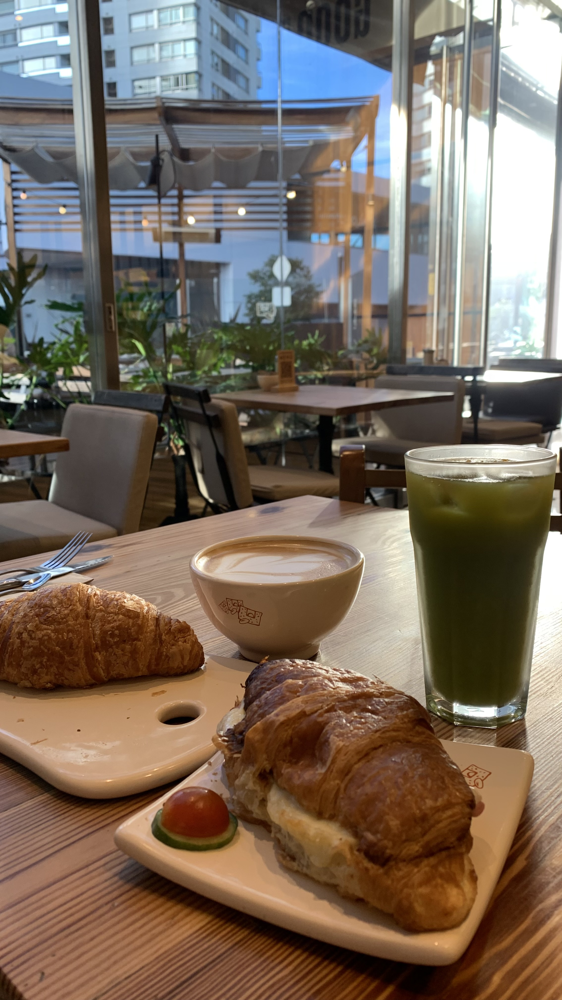
Le Pain Quotidien
Café con leche, jugo detox, croissant y croissant tostado con jamón y queso
Ubicación: Bouchard 649
-
El Patio
Menu prearmado de brunch para compartir hasta 3 personas que incluye: Jugos de naranja, brownie, budín de limón, tostadas, croissant con jamón y queso. Además tostado en pan de campo y café con leche
Ubicación: Armenia 1764